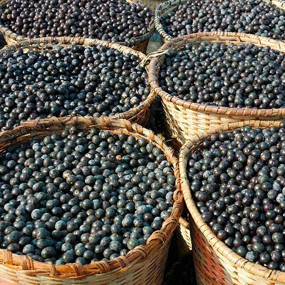

Açaí
O açaí é uma fruta rica em fibras. Isso significa que dá aquela sensação de saciedade que impede que a pessoa coma mais do que necessita. Pois é, é por isso que muita gente substitui a refeição por um grande copo de açaí. Mas as fibras possuem mais uma vantagem: ajudam a regular o intestino, evitando tanto prisão de ventre quanto a diarreia. Com isso, os nutrientes são melhor absorvidos pelo corpo, garantindo que ele continue funcionando bem.
Muita gente não sabe, mas o açaí também é um ótimo aliado do coração. Isso porque ele possui boas quantidades de antocianina, nutriente responsável pela sua coloração roxa. Essa substância evita a degeneração celular, o que por si só já impede o aparecimento de problemas cardiovasculares. Mas além disso, o açaí é praticamente uma concentração de polifenóis, que por sua vez aumentam o fluxo sanguíneo do coração, permitindo que ele continue saudável e resistente